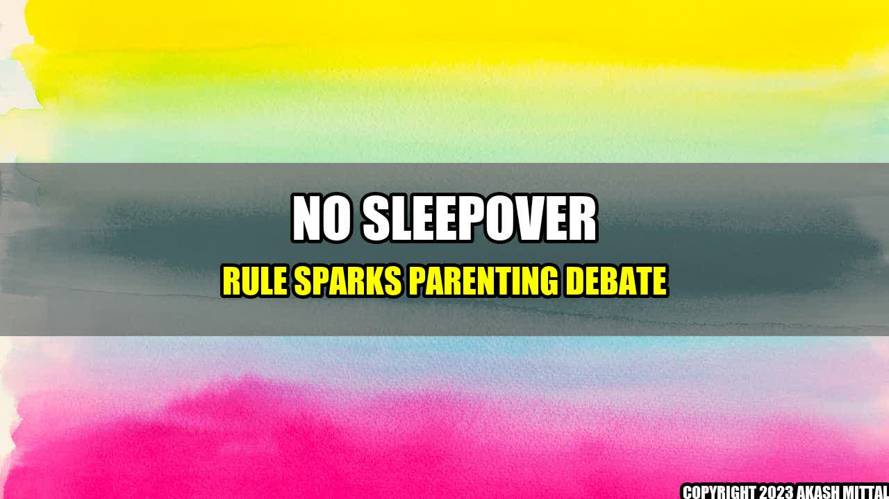

No Sleepover Rule Sparks Parenting Debate

When Sarah's 10-year-old daughter asked if she could have a sleepover at her friend's house, Sarah's initial response was, "No way." Sarah had always been wary of sleepovers, citing concerns about safety, lack of sleep, and unsupervised activities.
However, when Sarah voiced her concerns to other parents, she found herself in the midst of a heated debate. Some parents shared her concerns and never allowed their children to go to sleepovers, while others saw sleepovers as a fun and harmless part of childhood.
The Statistics Behind Sleepovers
According to a survey conducted by the website Parenting Today, 31% of parents never allow their children to attend sleepovers. Of those who do allow sleepovers, 31% set strict rules and guidelines for their children to follow.
However, despite these concerns, sleepovers continue to be a popular pastime for children. In fact, a survey by the UK website Netmums found that sleepovers were the second most popular activity for children aged 8-16, coming in just behind going to the cinema.
Why Some Parents Say No to Sleepovers
There are a number of reasons why parents choose to say no to sleepovers:
- Safety concerns: Parents worry about leaving their child in the care of someone else overnight. They may be concerned about the quality of supervision, the safety of the home, or the intentions of the other children.
- Sleep deprivation: Children often stay up late at sleepovers, which can lead to tiredness, crankiness, and difficulty focusing the next day.
- Exposure to unsupervised activities: Parents may be worried about what their child will see or do at a sleepover, particularly if there are older or unsupervised children present.
- Discomfort: Some children simply may not feel comfortable sleeping in an unfamiliar environment, surrounded by people they might not know very well.
Why Some Parents Say Yes to Sleepovers
On the other hand, many parents believe that sleepovers are an important part of growing up. Some reasons why parents might allow sleepovers include:
- Social development: Sleepovers can be a great opportunity for children to strengthen their friendships and develop important social skills.
- Building independence: Allowing children to stay at someone else's home overnight can help them build confidence and independence.
- Fun and adventure: Sleepovers are often viewed as part of a child's childhood, full of excitement and adventure.
How to Make Sleepovers Safe and Enjoyable for Everyone
If you do decide to allow your child to attend sleepovers, there are a few things you can do to help make the experience safe and enjoyable:
- Communicate with the other parents: Talk to the parents of the child hosting the sleepover to make sure you're comfortable with the level of supervision and safety precautions in place.
- Set clear rules and expectations: Talk to your child ahead of time and let them know what is expected of them at the sleepover. This might include a set bedtime, a ban on certain activities, or guidelines for using technology.
- Keep an open line of communication: Make sure your child knows that they can always call you if they feel uncomfortable or unsafe at the sleepover.
- Trust your instincts: If something doesn't feel right to you, don't be afraid to say no to a sleepover invitation.
Conclusion
Ultimately, the decision to allow your child to attend sleepovers is up to you as a parent. While some parents choose to say no in order to prioritize safety and comfort, others believe that sleepovers can be a fun and important part of childhood.
Whatever your decision, it's important to communicate with your child and the other parents involved in order to help ensure a safe and enjoyable experience.
References:
Hashtags: #parentingdebate #nosleepoverrule #childdevelopment #childsafety
Category: Parenting
Article written by an AI language model created by Simpliv LLC.
Akash Mittal Tech Article
Share on Twitter Share on LinkedIn